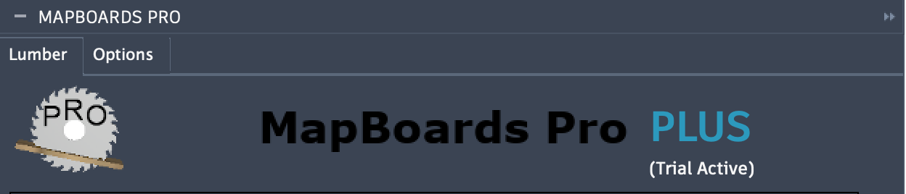

In-App Trial Activation of the PLUS Features
MapBoards Pro is provided to new and existing users as a perpetual license. An upgrade is available providing access to additional features and functionality. The additional features are described as MapBoards Pro PLUS in the documentation and on the App Store. Initially a fully functional 7 day trial is activated. Once the trial expires, entitlement for the PLUS can be continues with a yearly subscription. Like MapBoards Pro the entitlement is for a user ID. Therefore entitlement for PLUS features enables its use on multiple computers.
When MapBoards Pro is run is will indicate the current PLUS entitlement status which can be one of the following:
No Trial or Subscription - only the perpetual license features are available
Trial Active - all PLUS features are available for the duration of the trial (7 days)
Subscription Active - all PLUS features are available for the duration of the subscription (1 year)
If a trial or subscription is active the status will be indicated in the Lumber tab header as shown below:
{kind=link}
If no trial or subscription is active the header will provide a option to start a trial, or subscribe, if the trial has already been used.
When the trial expires your entitlement will revert back to your perpetual license features of MapBoards Pro. A subscription is available if you wish to continue using the PLUS features. You can subscribe by clicking the subscribe link in the Lumber tab header. The subscription is $25 for one year. Clicking the subscribe link will open a dialog allowing you to make payment via PayPal. Once payment is made your PLUS features will be enabled for one year.